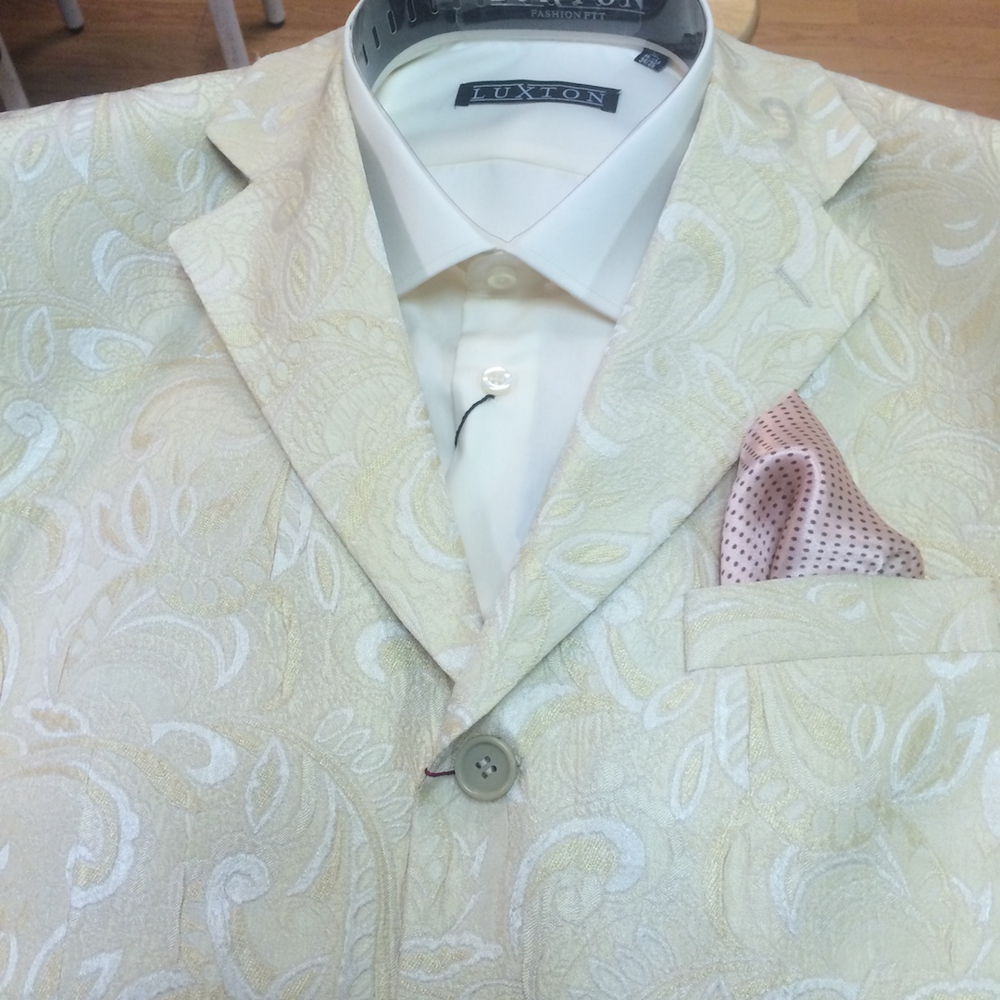
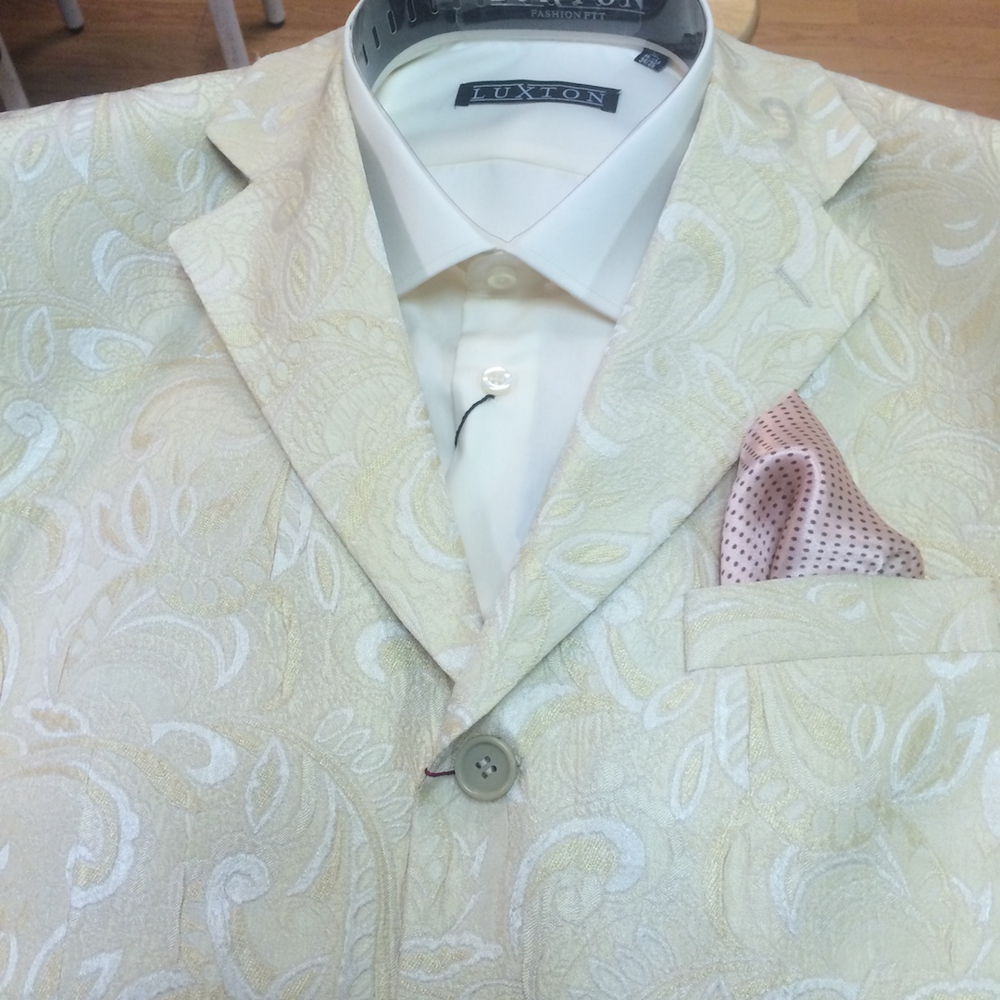
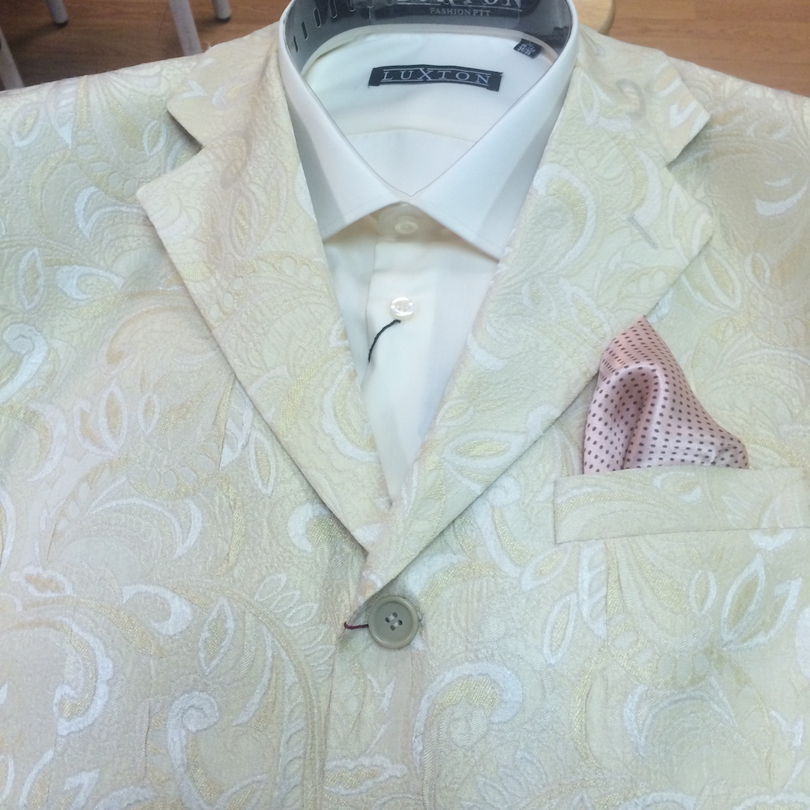
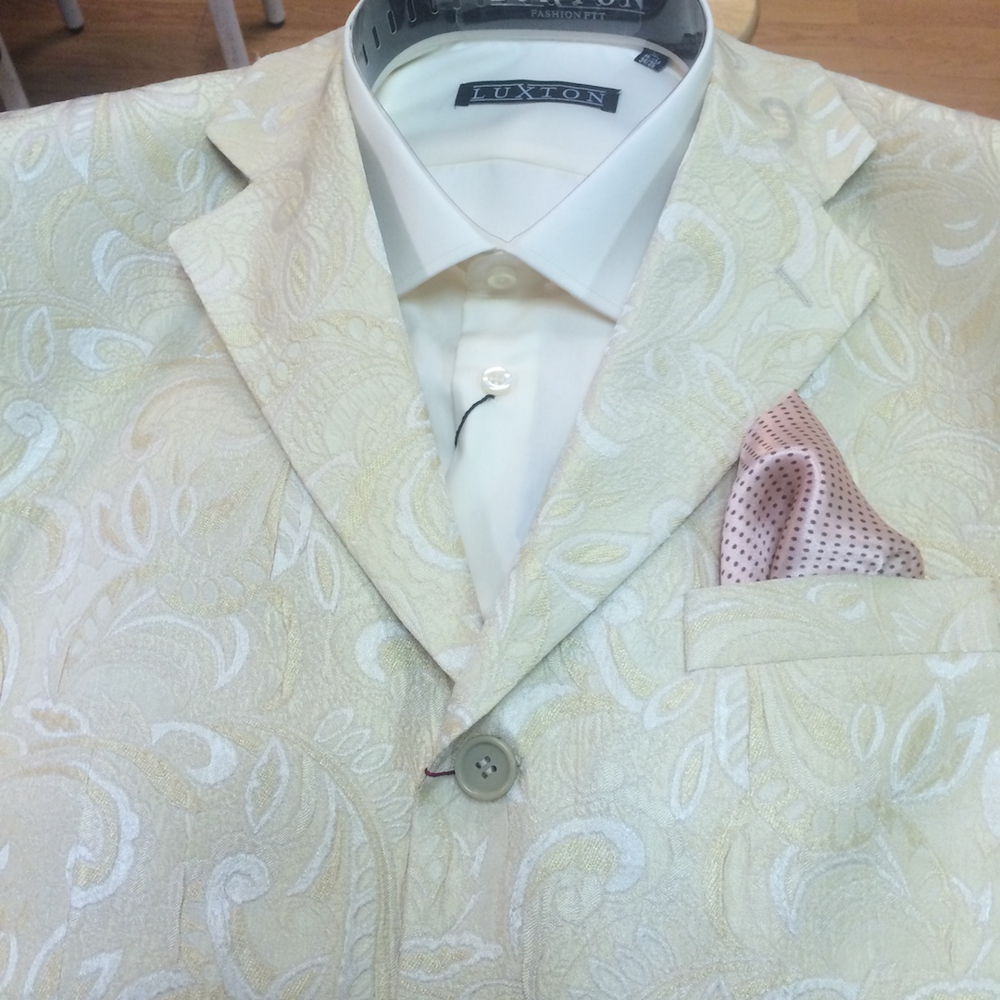

 

After graduating from Bloomfield High school after much deliberation I decided to go to Middlesex County College. For the next few years I discovered a lot of professions and skills that did not suit my needs. After deciding to change my major to fashion merchandising. At this point I decided to attend LIM college.
That is when I began to see a vision off becoming a multifaceted individual. Becoming intertwined between multiple industries was my goal. That is why I decided to obtain a degree in Marketing with a focus in fashion merchandising as well as visual merchandising.
*The styledized itemes where taken at an Italian mens clothing store where I intern'd*